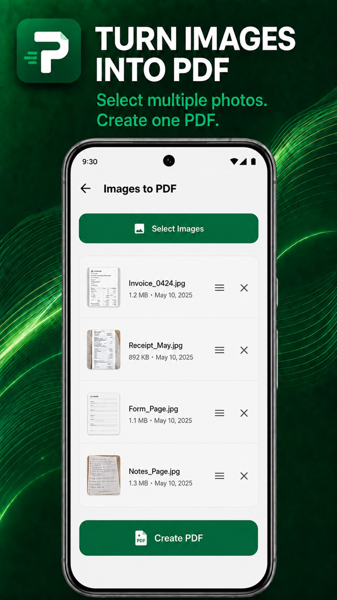

Document submissions
Combine several photographed pages of a form, certificate or application into one PDF.
Pagrix guide for Android
Images to PDF tutorial
Turn a single JPG—or a group of document photos—into one PDF on your phone. Pagrix helps you review the images, put them in the right page order, save the PDF and share the finished document.

Useful for everyday documents
A single PDF is easier to submit, review and share than a loose group of gallery images.
Combine several photographed pages of a form, certificate or application into one PDF.
Place photographed notebook pages in reading order before saving them as one document.
Group related photos into a single PDF that is simpler to keep or send.
Launch Pagrix. From the home tools, tap Images to PDF.
Tap Select Images to open the Android gallery picker.
Select one image or several images from the choices available in your Android gallery picker. Pagrix then opens Crop & Adjust for each selected image. Tap Apply / Next as you review them and Done on the last image.
On the Images to PDF review screen, press and drag the thumbnails to reorder them. You can also use Add Images, Crop & Adjust, Rotate or Delete before saving.
Tap Save PDF, then choose the PDF name and destination in Android's save interface. Save PDF is unavailable when the review contains no images.
After Pagrix shows PDF created successfully, choose Open PDF to review it or Share to send it through another app.
One image
Images to PDF works with a single selected photo. Choose the JPG from the gallery picker, review it in Crop & Adjust, tap Done, and then use Save PDF.
Multiple images
Select several images together, review each one, and Pagrix places them into a single Images to PDF project. Each image becomes a page in the saved PDF.
Arrange before saving
The horizontal thumbnail strip on the review screen is reorderable. Press and drag a thumbnail to move that image earlier or later in the document.
Tap a thumbnail to review its page. Use Rotate, Crop & Adjust or Delete if a page needs attention, and Add Images if something is missing.
This guide illustration represents page order, not an app screenshot.
Finish the document
Choose the file name and destination when Android prompts you.
Review the completed document in Pagrix after it is created.
Send the saved PDF using an app available in Android's share interface.
Common problems and FAQs
Yes. Select one image, complete Crop & Adjust, then tap Save PDF on the Images to PDF review screen.
Yes. Select multiple images together or use Add Images during review. Pagrix saves the reviewed images as pages in one PDF.
Press and drag the thumbnails on the Images to PDF review screen. Their order becomes the page order in the PDF.
Save PDF requires at least one image in the review. If the review is empty, tap Add Images and choose an image first.
Yes. The review screen includes Rotate and Crop & Adjust actions for the selected image.
Pagrix saves the PDF to the name and destination you choose in Android's save interface.
Yes. The completion panel provides Open PDF and Share actions after the PDF is created successfully.
Pagrix uses Android's image picker. The available choices depend on the images and locations your device makes available to that picker.
Pagrix for Android
Select, arrange, save and share from your Android phone.